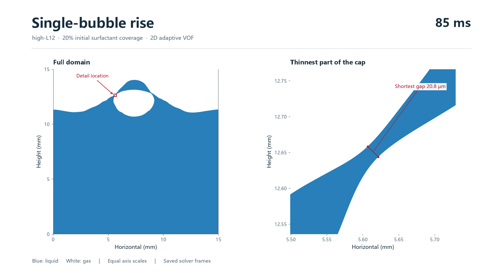
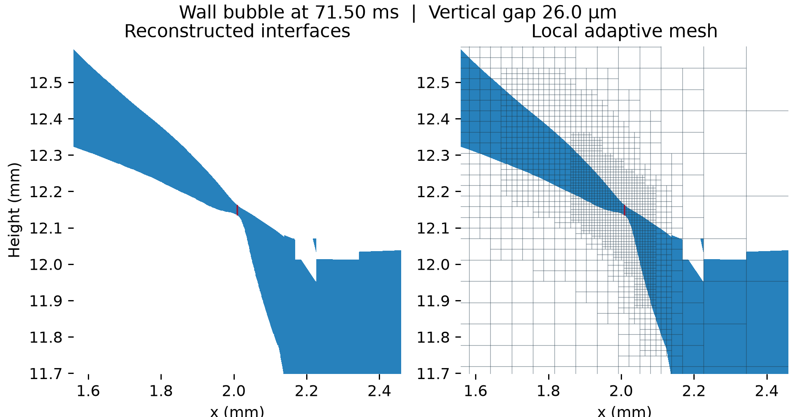
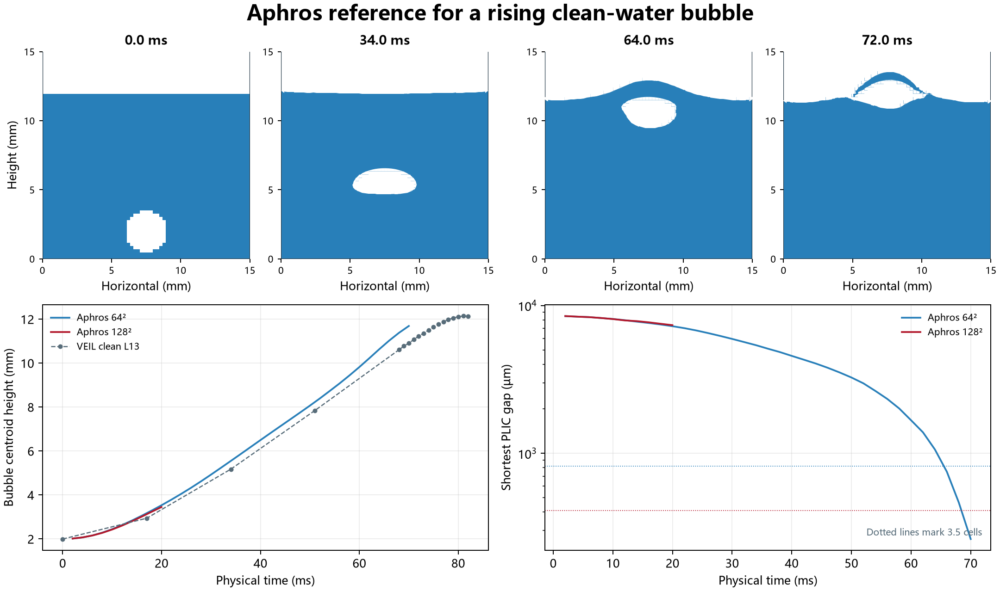
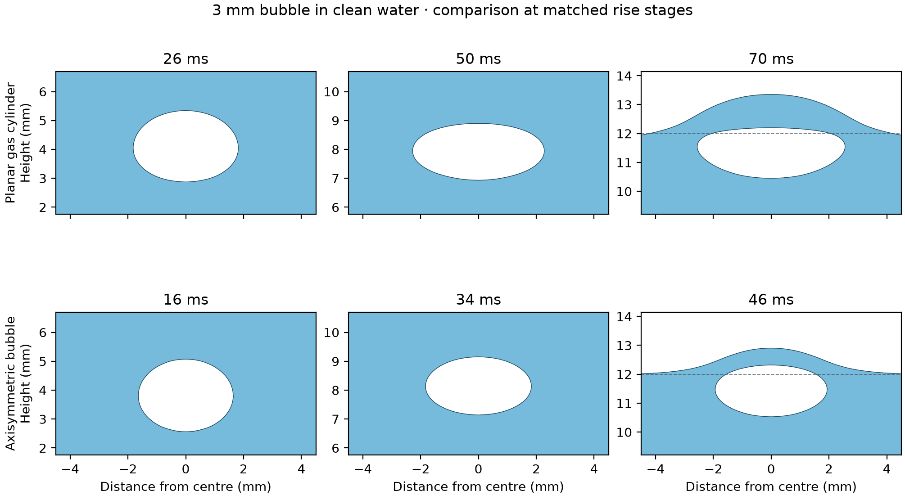
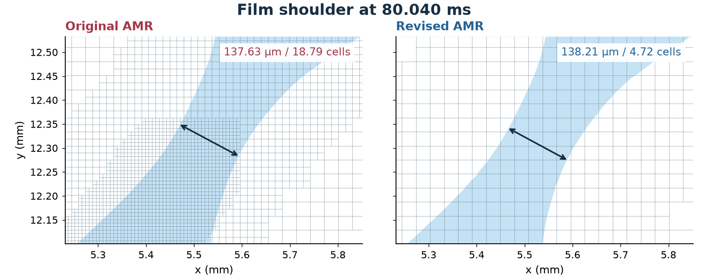

Adaptive VOF for bubble rise and film drainage
A 15 × 15 mm two-dimensional tank compares a free bubble, a wall bubble, and a bottom bubble. The calculation tracks the water film between a rising bubble and the atmosphere.
Contributions
- Pair interfaces by gas connectivity. Identify the trapped and atmospheric gas regions separately so a fold in one interface does not count as a film.
- Move refinement with the draining film. Refine where the two interfaces approach, then compare gap and liquid area from a shared checkpoint at equal physical times. The finest local cell was 7.32 µm.
- Isolate flattening, lateral drift, and wall attachment. Compare fixed-grid and adaptive single-bubble runs with the three-bubble run, and quantify the contact angles required for wall retention.
The contribution is the diagnostic workflow and its controlled comparisons. The flow solver uses Basilisk VOF, quadtrees, and surface-tension discretization.
Latest single-bubble runs · 25 Nov 2026
A 3 mm bubble rises in a 15 × 15 mm planar tank. The clean-water and 20% initial surfactant cases each use L12 and L13. The 20% setting means that both gas–liquid interfaces start at one fifth of the model’s saturation surface concentration, equivalent to about 71.0 mN/m.
| Case | Finest cell | Last saved | Shortest gap | Status |
|---|---|---|---|---|
| Clean L12 | 3.66 µm | 76.559 ms | 12.8 µm | Film-resolution guard (~3.5 cells) |
| Clean L13 | 1.83 µm | 81 ms | 88.3 µm | Running |
| 20% coverage L12 | 3.66 µm | 85 ms | 20.8 µm | Running |
| 20% coverage L13 | 1.83 µm | 83 ms | 108.0 µm | Running |
In the PLIC reconstruction, the bubble gas and the atmosphere are separate at all four listed times. At a matched time of 83 ms, the two 20% coverage runs give shortest gaps of 57.0 and 108.0 µm. Late film thickness remains unconverged. The 105 ms target and physical rupture timing are pending.

What makes the 2D runs slow
- A few fine cells govern the global time step. The explicit capillary stability limit scales as the minimum cell width to the 3/2 power. Recorded L12 and L13 time steps are about 0.328 and 0.116 µs, or 3,053 and 8,635 substeps per simulated millisecond.
- Each step updates the flow on the full quadtree. high-L12 took 1 hour 52 minutes to advance from 84 to 85 ms and ended with about 45,000 leaf cells. Each continuation uses one solver thread. In a separate short profile, implicit viscosity relaxation and residuals took about 23% of sampled CPU time, and momentum restriction and tree boundary updates together took about 36%.
- Two acceleration paths have short-window results. Targeting about four cells across the film gave 6.8–11.6× speedups in two matched-restart tests. In a separate matched restart, four threads took 45.4 s and one thread took 96.2 s. · Mesh benchmark data · Capillary time-step limit
Animation and results
- The wall bubble numerically connected to the atmosphere between 72.50 and 72.75 ms.
- The free bubble’s smallest measured vertical gap was about 96 µm at 95.75 ms. It remained separate from the atmosphere at 110 ms. The bottom bubble retained a contact segment of about 2.90 mm.
- Across 200 saved states, the largest relative liquid-area drift was 1.39 × 10⁻⁷. The mesh and PLIC reconstruction matched cell by cell at all four continuation points.
The connection time is a finite-grid observation. The wall film reached grid scale, so its physical rupture time and lifetime remain undetermined.



At 50 ms, the single-bubble width-to-height ratios were 2.13 on the fixed grid and 2.12 on the quadtree. Both had under 0.6% mirror mismatch. In the three-bubble run the free bubble had a ratio of 2.19 and shifted 0.53 mm to the left.
Governing equations
Two phases and volume fraction
Fresh water and air are incompressible. The liquid and gas volume fractions are α and 1 − α. A single velocity field u and pressure field p describe both phases. Pressure can jump at the interface and the interfacial mass flux is zero.
| Material | Density (kg/m³) | Dynamic viscosity (Pa·s) |
|---|---|---|
| Water | 998.2 | 1.002 × 10⁻³ |
| Air | 1.204 | 1.81 × 10⁻⁵ |
The tank is 15 mm wide and high, with a 12 mm initial water depth. The round free bubble and the two semicircular wall bubbles have the same nominal diameter of 3 mm. Initial velocity is zero, surface tension is σ = 0.0728 N/m, and gravity acts downward at 9.81 m/s².
The free, wall, and bottom bubble centers start at (7.5, 2), (0, 4), and (11.5, 0) mm. The solid boundaries clip the two attached circles to semicircles.
Momentum, viscosity, and capillarity
The normal n points from liquid to gas, κ = ∇ₛ·n, and δₛ localizes capillary force to the interface. A stationary circular gas bubble has an excess pressure σ/R relative to the liquid at the same height. PLIC reconstructs the interface as a segment in each mixed cell. Phase momenta use the same geometric fluxes as the volume fractions and are then combined to recover velocity.
Walls and open top
The sidewalls and bottom are no-slip and impermeable. The equilibrium contact angle is 90° at each three-phase contact point. The open top uses zero gauge pressure, zero normal gradients of velocity, and zero liquid volume fraction at the boundary.
Pressure projection and time step
Here u* is the provisional face velocity and ρ_f is evaluated from the average of adjacent liquid fractions. Viscosity is implicit and surface tension is explicit. The continuation solves the same pressure equation using multigrid-preconditioned generalized conjugate residual iterations. The largest normalized pressure residual Δt²‖rₚ‖∞ in the final segment was about 1.00 × 10⁻⁶.
On a locally uniform mesh the advective bound scales as CFL·Δ/|u_f|, with CFL = 0.35 here. Halving the cell size reduces the explicit capillary step bound by 2⁻³ᐟ². Cells can coarsen again once the film leaves them.
Drainage and local refinement
The same two-phase equations govern water flow in the film. The two gas regions are labeled first. Vertical probes then intersect the PLIC interfaces at the bubble top y_b and the free surface y_s. All reported gaps are vertical separations, which can differ from normal thickness for an inclined film.
When the film spans the full wall strip, its upper and lower interfaces move with the liquid and the left wall is impermeable. A decrease in the strip’s liquid area therefore measures discharge across its right edge, per unit out-of-plane depth.
Refinement follows the narrowing film while the remaining mesh responds to the interface and velocity fields. At 71.25 ms, matched runs with 14.65 and 7.32 µm cells gave gaps of 64.4 and 62.4 µm, a difference of 3.1%. This is a local comparison at one time. Gaps below roughly 3.5 finest-cell widths are flagged as grid scale and retained in the numerical trajectory.
Static wall attachment

The static calculation fixes the original contact sites at y = 2.5 and 5.5 mm and holds the gas cross-sectional area A. Along arclength s, ψ is the tangent angle and Δp_c is the gas–liquid pressure difference at reference height y_c. The hydrostatic pressure gradient changes the curvature with height.
At the original sites, the upper and lower angles are about 76.2° and 103.7°, balancing a buoyancy force of 0.0346 N/m. The dynamic 90° case slides along the wall. The static solution quantifies the required retention, which a real wall can supply only through its material-dependent contact-angle hysteresis.
Single bubble and surfactants
The clean-water single-bubble control ran to 105 ms. Its gas region numerically connected to the atmosphere between the 82 and 84 ms outputs. Constant surface tension supplies curvature forces. A surfactant model additionally transports concentration along the two interfaces and produces a tangential Marangoni stress.
A surfactant extension would use the following equations. Γ is the surface concentration, Dₛ the surface diffusivity, J the bulk-to-interface exchange, and σ(Γ) a material relation.
Surface elasticity and Marangoni stress can retard drainage. A material-calibrated case can be compared with clean water by measuring the film thinning rate. The three-bubble calculation uses constant σ and does not solve these transport equations.
Aphros clean-water bubble-rise reference
A 3 mm bubble starts at 2 mm in the same 15 × 15 mm planar tank with a 12 mm liquid depth. Material properties, initial conditions and wall conditions match the clean-water VEIL comparison.
| Grid | Cell width | Checked through | Max. relative liquid-area drift | Grid connectivity bracket | Run status |
|---|---|---|---|---|---|
| 64² | 234.4 µm | 72.00 ms | 2.72e-10 | 70.00–72.00 ms | Running |
| 128² | 117.2 µm | 19.98 ms | 3.11e-10 | — | Running |
| 256² | 58.6 µm | 0.00 ms | 0.00e+00 | — | Running |

Aphros uses a uniform grid, single-layer PLIC and particle curvature. Initial plain-PCG trials developed pressure errors and large velocities on refinement. The reruns use SMG preconditioning, release the preconditioner after each solve, and raise the pressure-iteration cap on the finer grids. The audit measures area, centroid, gap and connectivity from saved VOF fields and PLIC facets.
At 68 ms the Aphros centroid is 11.38 mm, versus 10.61 mm in clean-water VEIL. This update covers the checked portion. The 105 ms window is pending verification.
Uniform grids provide an independent check of the rise and gross shape. At 256² the cell width is 58.6 µm. Covering a film of about 20.8 µm with 3.5 cells across this 15 mm tank would require about 2,500 uniform cells across the width. Local refinement is more practical for directly resolving late drainage. This Aphros version uses fixed-size structured blocks. · Aphros
The three-dimensional quasi-static reference is Young–Laplace equilibrium. For a 3 mm bubble at radius-based Bond number 0.30, the axisymmetric result places the cap crest about 0.55 mm above the far-field liquid level and the cavity bottom about 2.12 mm below it. The surfactant VEIL slice at 85 ms has a crest about 3.32 mm above the flanks. Geometry, transient motion and interfacial mobility differ between these cases. The static reference constrains the near-rest shape. Listed connectivity times describe grid-scale topology. · Young–Laplace / MVOF · High-speed experiments
Axisymmetric static reference shape

Additional controls and benchmarks
Single-bubble shape and crown drainage
At comparable centroid heights near 11.4 mm, the planar and axisymmetric bubbles are 5.11 and 3.87 mm wide. At 48 ms the axisymmetric film is 417 µm at the center, 210 µm at the shoulder and about 303 µm farther out. Liquid volume in the crown measurement region drops from 6.38 to 2.57 mm³ over 44–48 ms.


Static floating-bubble shape
Refinement targeting about four cells
Refinement follows the shortest gap between the two interfaces, and excess cells are coarsened as the film thickens. The explicit capillary time step scales with the smallest cell width to the power 3/2, so coarsening can relax the limit across the domain.

| Matched restart tests | Original → revised | Speedup | Final gap difference |
|---|---|---|---|
| Surfactant, about 138 µm | 165.58 → 14.29 s | 11.6× | 0.42% |
| Clean water, about 23 µm | 221.84 → 32.70 s | 6.8× | 0.07% |
The clean-water sample ends at 6.34 cells across the film. The next coarser level would give 3.17 cells, below the 3.5-cell guard. The longer surfactant test hits the L12 guard at 83.531 ms with a 12.80 µm film and a gas pocket still separate from the atmosphere.
VEIL / Aphros curvature and capillary-wave benchmarks
A fixed triaxial bubble tests curvature. A damped two-dimensional capillary wave tests the coupling of surface tension, viscosity, and interface transport. VEIL uses the bubble-cap solver's height-function curvature. Aphros uses particle-based curvature.


| Metric | Grid | VEIL | Aphros particles |
|---|---|---|---|
| Ellipsoid curvature RMS | 323 | 5.58% | 5.39% |
| Ellipsoid curvature RMS | 643 | 2.32% | 4.72% |
| Wave amplitude RMS | 16 cells / wavelength | 1.92% | 4.84% |
| Wave amplitude RMS | 32 cells / wavelength | 0.62% | 2.41% |
| Wave amplitude RMS | 64 cells / wavelength | 0.26% | 1.84% |
| Wave period | 64 cells / wavelength | 0.16% | 0.94% |
On the 64³ ellipsoid, VEIL's area-weighted RMS is about half of Aphros's. The 95th percentile of local relative error is 8.01% for VEIL and 7.11% for Aphros. On the finest wave grid, Aphros's amplitude RMS is 7.1× VEIL's. Maximum relative liquid-area drift on that grid is 5.6 × 10⁻⁸ for VEIL and 1.4 × 10⁻¹⁵ for Aphros.
Error definitions and audit data
The wave uses matched densities and viscosities and constant surface tension, scored against Prosperetti's linear solution at the same 735 dimensionless times. Aphros hybrid curvature gives 16.39% RMS on the 64³ ellipsoid. The table lists particle curvature. Each solver uses its own initialization and time-step control. Cap drainage and film thickness require separate comparisons.
VEIL run audit (JSON) · Aphros run audit (JSON) · Common-window wave scores (JSON) · Capillary-wave reference
References and related results
- Basilisk incompressible variable-density solver · Momentum-conserving VOF transport · Surface-tension discretization
- Atasi et al. · Lifetime of Surface Bubbles in Surfactant Solutions
- Dussan V. and Chow · On the ability of drops or bubbles to stick to non-horizontal surfaces of solids
- Conservation derivation and microscale event studies from the project archive